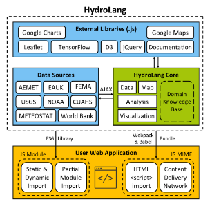

Título
HydroLang: An open-source web-based programming framework for hydrological sciences.
Autores
Carlos Erazo Ramirez, Yusuf Serme, Ibrahim Demir
Resumen
En el contexto actual de cambio climático y presión sobre los recursos hídricos, el artículo "HydroLang: An open-source web-based programming framework for hydrological sciences" presenta HydroLang, un marco de trabajo web modular y de código abierto diseñado para la investigación y educación en hidrología.
se caracteriza por su arquitectura modular, que permite a los usuarios personalizar y extender sus funcionalidades. Este marco facilita la recuperación, manipulación, análisis y visualización de datos hidrológicos directamente en el navegador. Además, integra modelos de inteligencia artificial, como redes neuronales, para desarrollar modelos predictivos, mejorando la precisión de los análisis.
En el ámbito educativo, HydroLang se convierte en una herramienta valiosa, permitiendo a los estudiantes realizar tareas de hidroinformática de manera intuitiva. Su diseño accesible facilita la comprensión de conceptos complejos y fomenta un aprendizaje activo.
modularidad de HydroLang no solo reduce la complejidad, sino que también promueve la colaboración entre investigadores y desarrolladores, permitiendo la incorporación de nuevas funciones y actualizaciones
¿Qué es la HIDROLOGÍA?
Palabras clave
HydroLang, investigación hidrológica, educación, análisis de datos, visualización geoespacial.
Año de publicación
2022
Dónde se encuentra publicado
Base de datos Science DirectHydroLang: An open-source web-based programming framework for hydrological sciences. · Imagenes de pixabay
Ideas Principales
- Interoperabilidad y Estándares: HydroLang se desarrolla en conformidad con los estándares del Open Geospatial Consortium, lo que permite la interoperabilidad y el intercambio de datos de calidad en el ámbito de las ciencias hidrológicas.
- Modularidad y Extensibilidad: El marco está diseñado con una arquitectura modular que permite la personalización y la integración de nuevas funciones y bibliotecas, facilitando su uso en diferentes contextos de investigación y educación.
- Facilitación del Aprendizaje: HydroLang se presenta como una herramienta educativa que permite a los estudiantes realizar tareas de hidroinformática de manera intuitiva, utilizando comandos encadenados que se asemejan a oraciones en inglés sencillo.